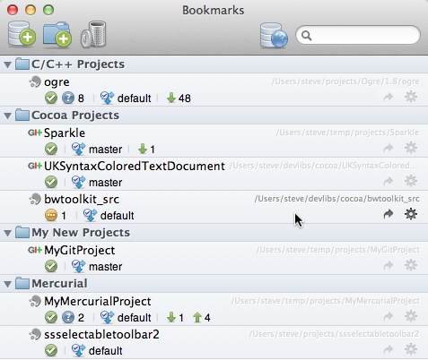

Bookmarks: Organising your bookmarks
Organising your book marks is simple, you can create groups to collect your related repositories together, nested to any level you like, and drag and drop groups or repositories in the hierarchy to re-order or re-locate them.

Adding groups, or deleting or renaming any item in the tree, is done through the toolbar.
See also
Bookmarks overview
Adding your existing local source folders
Cloning a repository
Creating a blank repository